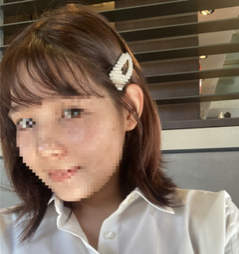

復縁・失恋・既婚者・依存的な恋愛の電話相談
恋愛を、感情だけで
決めないために。
「もう一度やり直したい」「既読スルーがつらい」「この恋を続けるべき？」——
元キャバ嬢の現実的な視点で、いま何をすべきかを電話で一緒に整理します。
ちさの相談室が選ばれる3つの理由

① 元キャバ嬢の“現実的”な視点
たくさんの男女を見てきた経験から、きれいごとだけでない現実的な見立てをお伝えします。感情だけでは見えなかった選択肢が見えてきます。
② 復縁・既婚者・依存も相談OK
復縁、失恋、ブロックされた関係、不倫・既婚者との恋愛、依存的な関係など、人に言いにくい悩みも安心してお話しください。
③ 恋愛サポートアドバイザー監修の安全な聴き方
民間資格「恋愛サポートアドバイザー」の倫理と聴き方に沿って対応。あなたを否定せず、決めるのはあなた自身、を大切にします。
こんなお悩みに
- 別れた相手と復縁したいが、何から始めればいいか分からない
- 勇気を出して送ったメッセージが既読スルー。もう脈なし？
- ブロックされた。連絡していいのか、待つべきか
- 既婚者・不倫の関係で、この先どうすべきか整理したい
- 相手に振り回されて依存している気がしてつらい
- 別れるか続けるか、自分の気持ちが分からない
※相手の気持ちを操作する方法や、復縁・交際成立の保証はいたしません。あなたが自分で選べるよう、状況と気持ちの整理をお手伝いします。
電話相談の流れ
- 予約：予約フォームから希望日時を送信。こちらから折り返しご連絡します
- お電話：お約束の時間に、こちらからお電話します（番号は通知されません）
- 整理・提案：状況・気持ち・希望を切り分け、いまできる現実的な一歩を一緒に考えます
- あと払い：お話しした分だけ（1分90円）を通話後にオンライン決済でお支払い
料金
電話相談 1分 90円（通話時間に応じた後払い）
お支払いは通話後に、お話しした分だけ（1分90円）をオンライン決済でお願いします（クレジットカード・PayPay等）。前払いは不要・匿名でご利用いただけます。
相談員プロフィール

結城ちさ（ちさの相談室 / カップルカウンセリング lien）
元キャバ嬢として多くの恋愛模様を見てきた経験と、民間資格「恋愛サポートアドバイザー」の学びをもとに、復縁・失恋・複雑な恋愛のご相談に対応しています。あなたを責めず、現実的に、いまできることを一緒に考えます。
よくある質問
匿名でも相談できますか？
はい。お名前を出さずにご相談いただけます。安心してお話しください。
復縁できると保証してもらえますか？
いいえ。恋愛の結果や相手の気持ちは保証できません。あなたが状況を整理し、自分で選べるよう支援するのが役割です。
既婚者・不倫の相談もできますか？
はい。否定せずにお話をうかがい、状況の整理をお手伝いします。なお、法律上の判断は行いません。
料金はどうやって払いますか？
通話後に、お話しした分だけ（1分90円）をオンライン決済でお支払いいただきます（クレジットカード・PayPay等）。前払いは不要です。
つらくて消えたい気持ちがあります。相談できますか？
お気持ちをうかがいます。ただし医療や診断は行えないため、安全に関わる場合は専門の相談窓口や医療機関のご案内を優先します。
恋愛のお悩み読みもの
ご相談メニュー
お悩みに合わせて選べます。いずれも電話相談・1分90円・後払いです。